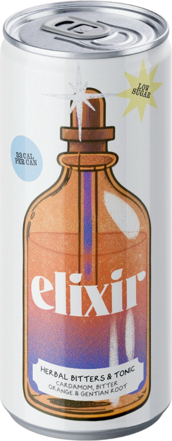

a pause in a can.
| Typical values | per 100ml | per 200ml can |
|---|---|---|
| Energy | 68kJ / 16kcal | 136kJ / 33kcal |
| Fat | 0g | 0g |
| of which saturates | 0g | 0g |
| Carbohydrate | 4.1g | 8.1g |
| of which sugars | 2.4g | 4.8g |
| Fibre | 0g | 0g |
| Protein | 0g | 0g |
| Salt | 0g | 0g |
Ingredients: Filtered Water, Fructose, Glycerin, Natural Flavourings (Gentian, Cardamom, Coriander, Bitter Orange), Malic Acid, Citric Acid, Sodium Citrate, Vitamin C (Antioxidant), Magnesium Sulphate, Pink Himalayan Rock Salt.
Herbal bitters & tonic. Alcohol free, 0.0% ABV. Vegan & gluten free. Store in a cool, dry place away from direct sunlight. Once opened, consume immediately. Best served chilled.
Elixir Drinks Ltd
124 City Road
London EC1V 2NX
Best before & lot: see base
4 × 200ml
a pause in a can.

Gentian, the original bitter.
Long before the apothecary, the wise women reached for bitter first. Gentian, a mountain root years in the making, is the backbone of the great aperitifs. We pour it with a light, bright tonic, at 0.0%.
Our herbal bitters, ready-poured with a light tonic. Born in London, for the moments you want to be fully present.
the ritual
gentian · cardamom · bitter orange · coriander
drink-elixir.co · @drink__elixir